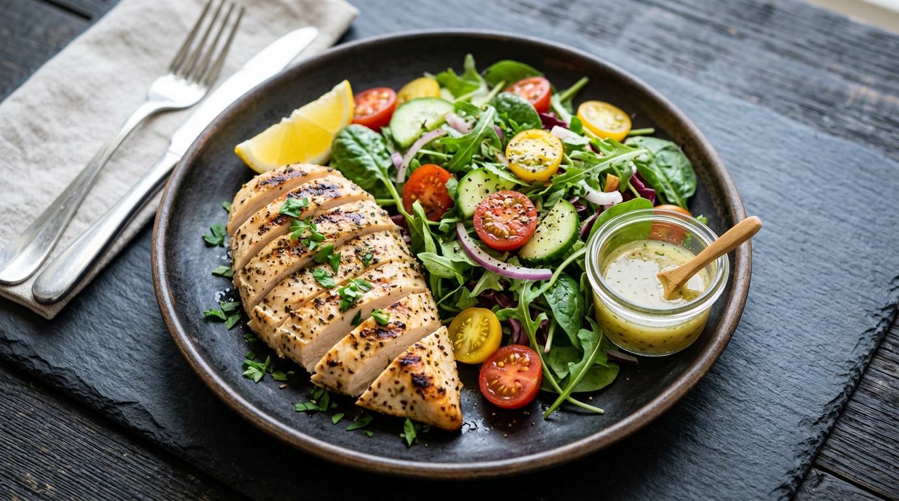
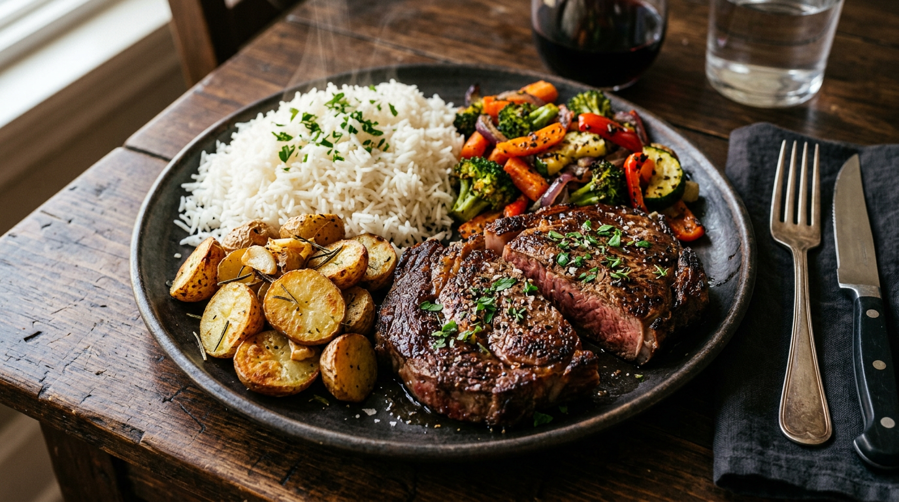

🍃
NUTRILISH
Cutting
vs
Bulking
The Complete Nutrition Guide
Everything you need to know about eating for your physique goals.
Science-Based • Practical • Free
The Two Phases
Goal
Lose fat, preserve muscle
Calories
-300 to -500 below TDEE
Duration
8–16 weeks
Rate
0.5–1% body weight / week
Risk
Muscle loss if too aggressive
Goal
Build muscle, minimize fat gain
Calories
+200 to +400 above TDEE
Duration
12–24 weeks
Rate
0.25–0.5% body weight / week
Risk
Excess fat if surplus too large
When to Cut vs Bulk
Body fat > 20% (men) / > 30% (women)
→
CUT FIRST
Body fat 12–20% (men) / 20–30% (women)
→
EITHER
Body fat < 12% (men) / < 20% (women)
→
BULK
New to lifting? Newbie gains window (first 3–6 months)
→
RECOMP
Pro Tip
Don't bulk above 20% body fat or cut below 10%. Cycling between 12–18% body fat is the sweet spot for most men — you stay lean enough to look good while building meaningful muscle.
2
NUTRILISH
The Cutting Blueprint
Cutting macros for a 180 lb person. Protein goes UP during a cut (1–1.2g per lb body weight) — it's your primary defense against muscle loss.

Cutting Day Sample — 180 lb Person
Breakfast
🥚 Egg white omelette + whole egg + spinach + 2 toast
420 cal · 38P · 32C · 14F
Lunch
🍗 Chicken breast + rice + huge salad + light dressing
520 cal · 45P · 44C · 14F
Pre-workout
🍌 Protein shake + banana + almond butter
380 cal · 32P · 40C · 12F
Dinner
🐟 Salmon + sweet potato + asparagus
480 cal · 36P · 40C · 18F
Snack
🧀 Cottage cheese + berries
200 cal · 24P · 18C · 4F
Total: 2,000 cal
P: 175g
C: 174g
F: 62g
Cutting Tips
- Protein at every meal — minimum 30g per sitting to maximize muscle protein synthesis
- High-volume, low-calorie foods: leafy greens, cucumbers, egg whites, broth-based soups
- Stay hydrated — 1 gallon per day minimum. Thirst masks hunger.
- Sleep 7–9 hours. Cortisol destroys muscle and spikes appetite when you're under-recovered.
- Refeed days: 1x per week at maintenance calories with extra carbs to reset leptin
- Cardio: 2–3x per week, low-intensity (walking, cycling) to preserve muscle glycogen
- Track everything — "eyeballing" leads to 300–500 hidden calories per day
3
NUTRILISH
The Bulking Blueprint
Bulking macros for a 180 lb person. Carbs go UP during a bulk — they fuel training intensity and accelerate recovery between sessions.

Bulking Day Sample — 180 lb Person
Breakfast
🌾 Protein oats + banana + PB + whole milk
650 cal · 38P · 72C · 22F
Lunch
🌯 Double chicken burrito bowl + rice + beans + cheese
720 cal · 52P · 68C · 24F
Pre-workout
🥯 Bagel + honey + protein shake
480 cal · 30P · 72C · 8F
Dinner
🥩 Lean beef stir-fry + white rice + veggies
680 cal · 44P · 70C · 22F
Snack
🥜 Trail mix + protein bar
440 cal · 24P · 48C · 18F
Total: 2,970 cal
P: 188g
C: 330g
F: 94g
Bulking Tips
- Progressive overload in the gym is NON-NEGOTIABLE — a surplus without training stimulus builds fat, not muscle
- Eat calorie-dense foods: nuts, oils, whole milk, white rice, oats — volume is your enemy here
- Protein: 0.8–1g per lb is sufficient during a bulk — save the extra calories for carbs
- Load carbs around workouts: big meal pre-workout, fast carbs post-workout
- Don't skip meals — consistency matters more than any single perfect day
- Aim for "clean bulk": 80% whole foods, 20% flexible. Dirty bulks add fat, not muscle.
- If gaining more than 1% body weight per week, dial back the surplus — you're adding fat
4
NUTRILISH
| Factor |
🔥 Cutting |
💪 Bulking |
| Calories |
Deficit (-300 to -500) |
Surplus (+200 to +400) |
| Protein |
1–1.2g per lb |
0.8–1g per lb |
| Carbs |
Moderate–Low |
High |
| Fat |
Low–Moderate |
Moderate |
| Cardio |
2–3x/week recommended |
Optional |
| Training Volume |
Maintain or slight decrease |
Progressive overload |
| Duration |
8–16 weeks |
12–24 weeks |
| Rate of Change |
0.5–1% BW/week |
0.25–0.5% BW/week |
| Priority |
Preserve muscle, lose fat |
Build muscle, limit fat |
| Meal Frequency |
4–5 meals (appetite control) |
4–6 meals (calorie density) |
Supplement Essentials
Creatine Monohydrate
5g daily • Year-round
Most researched supplement in history. Boosts strength and performance in both phases.
Whey Protein
1–2 scoops daily
Convenient protein source. Use it to close the gap on daily protein targets.
Vitamin D3
2,000–5,000 IU daily
Most people are deficient. Supports testosterone, immunity, and recovery.
Omega-3 Fish Oil
1–2g EPA+DHA daily
Anti-inflammatory. Supports heart health, brain function, and joint recovery.
Caffeine
100–200mg pre-workout
Improves strength output and endurance. Especially useful during a cut for energy.
Magnesium
200–400mg before bed
Improves sleep quality and recovery. Most people are chronically deficient.
Pro Tip
Supplements are the last 5%. Nail your calories, protein, sleep, and training first. No pill replaces consistency — but the right ones make consistency easier.
5
NUTRILISH
Sample Year Overview
Jan – Mar (12 weeks)
BULK — Focus on building muscle and strength. Train heavy, eat big, prioritize compound lifts.
April (4 weeks)
Maintenance — Eat at TDEE. Let your body normalize at the new weight before cutting.
May – Jul (12 weeks)
CUT — Lean out for summer. Slow deficit, high protein, 2–3x cardio per week.
August (4 weeks)
Maintenance — Stabilize your new body composition. Lock in the habits.
Sep – Nov (12 weeks)
BULK — Off-season gains. Leverage lower body fat for a more efficient bulk.
December (4 weeks)
Maintenance — Enjoy the holidays. Eat at TDEE. Set up for a strong January.
Quick Decision Framework
Ask yourself these 3 questions:
1
Am I above 18% body fat right now?
Cut First
2
Am I satisfied with my current muscle mass?
If No, Bulk
3
Is there a deadline — vacation, competition, event?
Cut 12 Wks Out
12–18%
Ideal BF range to cycle (men)
~0.5 lb
Optimal weekly bulk gain
1g/lb
Protein target while cutting
+300
Cal surplus sweet spot
Let NutriLish adapt your nutrition to every phase
AI-powered macro tracking that evolves with your goals. Cut or bulk — NutriLish has you covered.
Download NutriLish Free →
Available on the App Store • iOS 17+
6
NUTRILISH